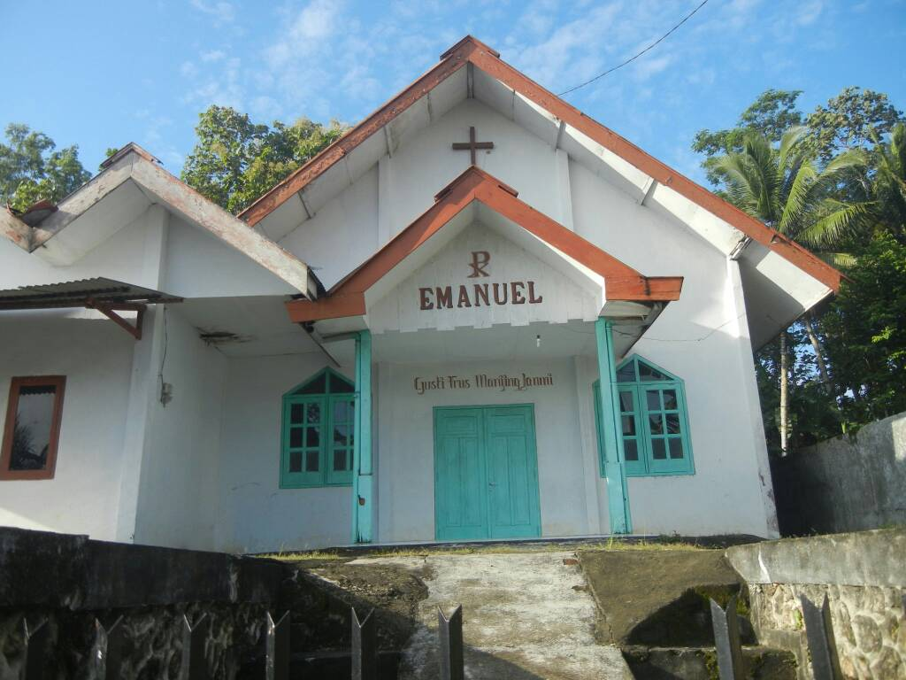

OUR THIRD DAY! DOING SOCIAL WORK FOR THE VILLAGE! THE FAREWELL NIGHT!
Ovbiously there were even more activities we did on this day, infact today might be one of the busiest day yet. We talked a little with the villagers, had breakfast, and had a morning walk with friends. It was an incredibly hot day and because of that, all of us was sweating really badly.
Around noon time, students had to do social work for the village. Social work is when we help either clean the village or basically doing work that is beneficial for the village. Many people did many different tasks. Some cleaned the insides of houses, some cleared dead leaves inside the yards, some even helped the villagers do their work. In that same day at night time, before the next day which is the last day we get to be here, some of the students of grade 8 performed infront of the entire village in honor of all the things the students and the villagers did together.
